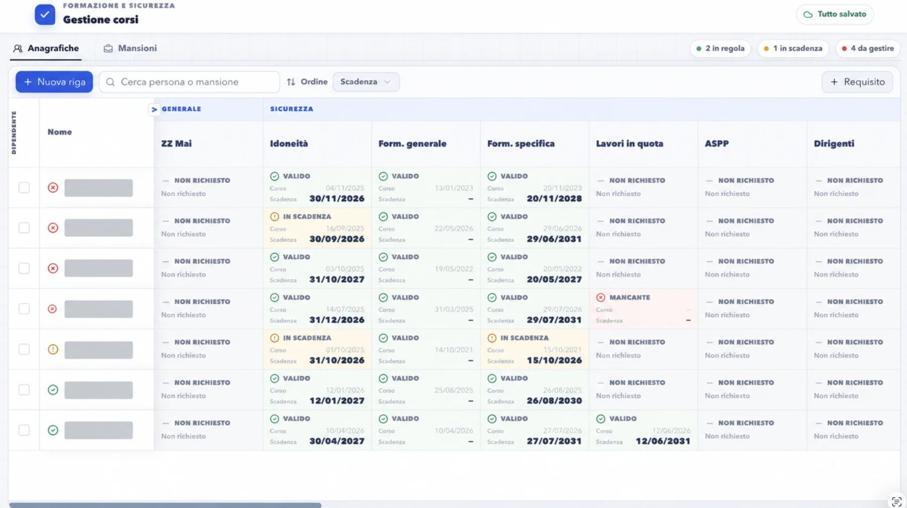

Manufacturing · Rockwell PLC · Technical documents · On-premise AI
What we build
Systems you can inspect.
01 · Documents
Translations preserving docx structure
Translating big docx manuals is a tedious, expensive and error prone process. Translators often copy paste paragraphs to chatgpt and re-paste them back; this app automates that process (there is a local AI option for privacy).
You can have your company glossary for technical terms and check the results with error detection systems.
02 · Operations
Custom app for documents (word, excel, pdf, eplan)
Get answers in seconds from private company data, with links to the exact paragraphs of the documents used to give you the answer. Eplan parsing support and local AI are options.
Wide support for Excel file modification and analysis.
03 · Avionics
Everything a pilot needs, in front of his eyes. Custom built.
GPS speed, heading, altitude and inertial attitude. Flight plans can be made from the app and they are instantly transferred by Bluetooth to the HUD device.
04 · Excel
Complex Excel into web apps that are easy to maintain

Adding data is easier. Maintenance is easier. New employees learn the system faster, and errors go down.
The apps are easy to build and maintain through custom software that includes automatic backups.
05 · Controls
Controls & automation
Saving time and errors in data entry by transforming any custom excel file exported from your electrical schemas into perfect plc code to easily import into the app
06 · Local AI
Local AI systems
Keep your data private by using an AI that is self hosted INSIDE of your company network.
Note: this is expensive and definitely not for everyone. It can be done after a quick study to decide if it's worth it for the privacy improvements.